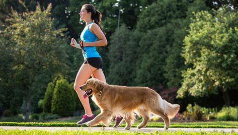

Home Safety
-
Keep Toxic Foods Out of Reach
Ensure that foods such as chocolate, grapes, onions, and garlic are stored securely, as they can be harmful to your dog.
-
Secure Hazardous Items
Store cleaning supplies, medications, and other toxic substances in cabinets out of your dog's reach.
-
Use Pet-Friendly Plants
Avoid keeping houseplants that are toxic to dogs, such as lilies, poinsettias, and philodendrons.
Outdoor Safety
-
Supervise Outdoor Activities
Always keep an eye on your dog when they're outside to prevent them from running into dangerous areas or encountering harmful animals.
-
Use a Leash
When walking your dog, use a leash to keep them safe from traffic and other potential hazards.
-
Provide Proper Shelter
Ensure your dog has a safe and comfortable shelter from extreme weather conditions.
Travel Safety
-
Use a Pet Carrier or Seatbelt
Secure your dog in a pet carrier or use a dog seatbelt when traveling in a car to prevent injuries during sudden stops.
-
Avoid Leaving Dogs in Cars
Never leave your dog unattended in a car, especially in hot weather, as temperatures can rise quickly and become dangerous.
Health and Well-being
-
Regular Vet Visits
Schedule regular check-ups with your veterinarian to monitor your dog's health and catch any potential issues early.
-
Maintain a Healthy Diet
Provide your dog with a balanced diet and plenty of fresh water to keep them healthy and hydrated.
-
Exercise and Mental Stimulation
Ensure your dog gets regular exercise and mental stimulation through walks, playtime, and training sessions.
Emergency Preparedness
-
Create an Emergency Plan
Have an emergency plan in place, including a pet emergency kit with food, water, medications, and your vet's contact information.
-
Know Basic First Aid
Learn basic first aid for dogs, such as how to perform CPR and treat minor injuries.